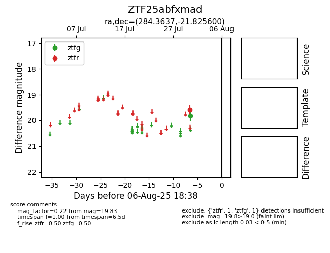

Target ZTF25abfxmad at 2025-08-06 19:35, see:
FINK: fink-portal.org/ZTF25abfxmad
Lasair: lasair-ztf.lsst.ac.uk/objects/ZTF25abfxmad
ALeRCE: alerce.online/object/ZTF25abfxmad
alt names
ZTF25abfxmad (ztf,fink)
coordinates:
equatorial (ra, dec) = (284.3637,-21.82560)
galactic (l, b) = (13.9190,-11.02372)
photometry
last ztfg=19.83, ztfr=19.58
1 ztfg, 1 ztfr detections
